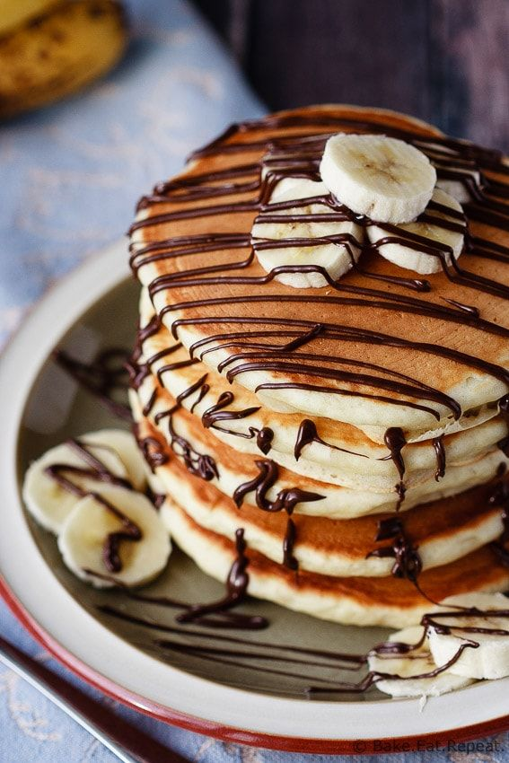

Wake up on the right side of the bed with a stack of sweet, cozy, and simple banana pancakes. This top-rated banana pancake recipe is easy to make and it comes together in just 15 minutes, so you don't have to wake up early to enjoy a satisfying breakfast. Learn how to make, store, and serve the best banana pancakes ever.
Ingridents for Bananapancake
- 1/2 teasppon of Salt
- An Egg
- 1 tablespoon of white Sugar
- 1 cup of Flour
- 2 teaspoon of Baking Poweder
- 1 cup of Milk
- 2 tablespoon of Vegetable Oil
- 2 ripe Banana